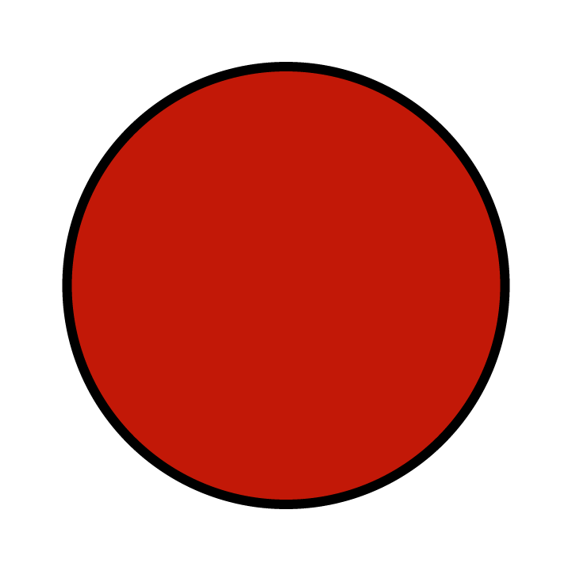

Kinesiske stjernetegn
Slangen
Rolig • Kløgtig • Observant
1953 • 1965 • 1977 • 1989 • 2001 • 2013 • 2025 • 2037
Rækkefølge
Position
Polaritet

Yin
Element
Ild
Lykkeblomst

Orkidé
Lykkefarve
Rød
Lykketal

Otte
Slangen er det sjette kinesiske stjernetegn.
Personer født i slangens år er rolige, kløgtige og observerende
personer, som ofte skjuler deres sårbarhed bag et behersket ydre.
De er intuitive, kunstneriske og gode under pres, men har også
behov for alenetid og kan fremstå følelsesmæssigt distancerede.
Deres største udfordring er at åbne sig for andre, da deres
tilbageholdenhed kan skabe mistillid og misforståelser i
relationer.
Passer bedst med: Hanen, oksen og aben.
Passer mindst med: Grisen og tigeren.
Rækkefølge
Position
Polaritet
Yin
Element
Ild
Lykkeblomst
Orkidé
Lykkefarve
Rød
Lykketal
Otte
Rækkefølge
Position
Polaritet
Yin
Element
Ild
Lykkeblomst
Orkidé
Lykkefarve
Rød
Lykketal
Otte
Personlighed
Personer født i slangens år har en mere rolig og observant
væremåde, men kan også være mistroiske og usikre. Ofte skjuler de
deres sårbare side og udviser ikke altid deres kløgt.
Slangen opfattes som en pålidelig person, som er handlekraftig og
kunstnerisk. Udaset opfattes de som rolige og beherskede personer,
men kan til tider eksplodere med stor energi og lidenskab.
Slanger er afslappet i nærvær med andre personer, men de har også
brug for alenetid. Hvis slanger lærer at vise deres sårbare side
til andre, vil de ofte se en stor personlig udvikling.
Styrker
Slanger er tilpasningsdygtige og har en skarp intuition. De har et
åbent sind og kan let se en sammenhæng mellem forskellige emner,
hvilket kommer dem til gode i deres arbejde.
De er gode til at holde hovedet koldt og danne sig overblik i
stressede og pressede situationer.
Svagheder
Slanger kan have det med at distancere sig følelsesmæssigt fra andre, hvilket får dem til at fremstå som kolde og mistroiske. Da de har det med at holde en følelsesmæssig afstand fra andre, kan det føre til misforståelser og skuffelser blandt deres nære og i værste tilfælde danner de mistro til andre.